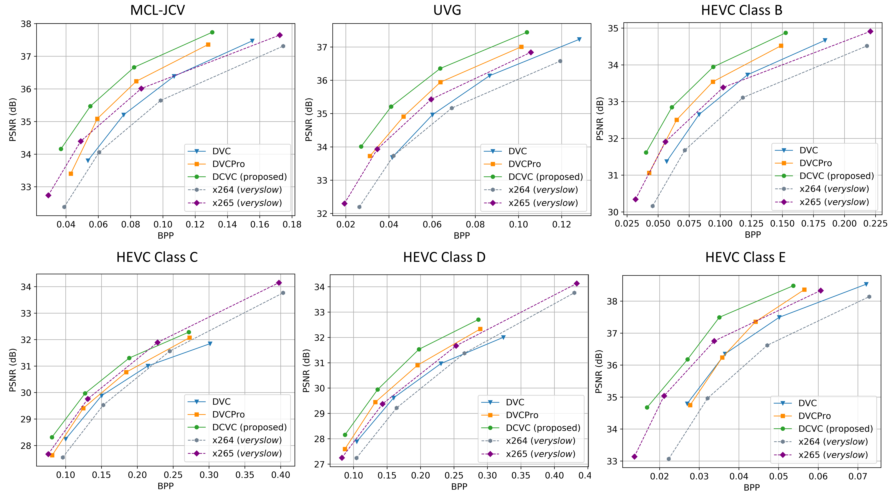

来源：papers/iVc/DCVC_讲解资源/代码核查快照/README.md · 原始 Markdown
Introduction
Official Pytorch implementation for Deep Contextual Video Compression, NeurIPS 2021
Prerequisites
- Python 3.8 and conda, get Conda
- CUDA 11.0
-
Environment ``` conda create -n $YOUR_PY38_ENV_NAME python=3.8 conda activate $YOUR_PY38_ENV_NAME
pip install torch==1.7.1+cu110 torchvision==0.8.2+cu110 torchaudio==0.7.2 -f https://download.pytorch.org/whl/torch_stable.html python -m pip install -r requirements.txt ```
Test dataset
Currenlty the spatial resolution of video needs to be cropped into the integral times of 64.
The dataset format can be seen in dataset_config_example.json.
For example, one video of HEVC Class B can be prepared as:
* Crop the original YUV via ffmpeg:
ffmpeg -pix_fmt yuv420p -s 1920x1080 -i BasketballDrive_1920x1080_50.yuv -vf crop=1920:1024:0:0 BasketballDrive_1920x1024_50.yuv
* Make the video path:
mkdir BasketballDrive_1920x1024_50
* Convert YUV to PNG:
ffmpeg -pix_fmt yuv420p -s 1920x1024 -i BasketballDrive_1920x1024_50.yuv -f image2 BasketballDrive_1920x1024_50/im%05d.png
At last, the folder structure of dataset is like:
/media/data/HEVC_B/
* BQTerrace_1920x1024_60/
- im00001.png
- im00002.png
- im00003.png
- ...
* BasketballDrive_1920x1024_50/
- im00001.png
- im00002.png
- im00003.png
- ...
* ...
/media/data/HEVC_D
/media/data/HEVC_C/
...
Pretrained models
-
Download CompressAI models
cd ./checkpoints python download_compressai_models.py cd .. -
Download DCVC models and put them into ./checkpoints folder.
Test DCVC
Example of test the PSNR model:
python test_video.py --i_frame_model_name cheng2020-anchor --i_frame_model_path checkpoints/cheng2020-anchor-3-e49be189.pth.tar checkpoints/cheng2020-anchor-4-98b0b468.pth.tar checkpoints/cheng2020-anchor-5-23852949.pth.tar checkpoints/cheng2020-anchor-6-4c052b1a.pth.tar --test_config dataset_config_example.json --cuda true --cuda_device 0,1,2,3 --worker 4 --output_json_result_path DCVC_result_psnr.json --model_type psnr --recon_bin_path recon_bin_folder_psnr --model_path checkpoints/model_dcvc_quality_0_psnr.pth checkpoints/model_dcvc_quality_1_psnr.pth checkpoints/model_dcvc_quality_2_psnr.pth checkpoints/model_dcvc_quality_3_psnr.pth
Example of test the MSSSIM model:
python test_video.py --i_frame_model_name bmshj2018-hyperprior --i_frame_model_path checkpoints/bmshj2018-hyperprior-ms-ssim-3-92dd7878.pth.tar checkpoints/bmshj2018-hyperprior-ms-ssim-4-4377354e.pth.tar checkpoints/bmshj2018-hyperprior-ms-ssim-5-c34afc8d.pth.tar checkpoints/bmshj2018-hyperprior-ms-ssim-6-3a6d8229.pth.tar --test_config dataset_config_example.json --cuda true --cuda_device 0,1,2,3 --worker 4 --output_json_result_path DCVC_result_msssim.json --model_type msssim --recon_bin_path recon_bin_folder_msssim --model_path checkpoints/model_dcvc_quality_0_msssim.pth checkpoints/model_dcvc_quality_1_msssim.pth checkpoints/model_dcvc_quality_2_msssim.pth checkpoints/model_dcvc_quality_3_msssim.pth
It is recommended that the --worker number is equal to your GPU number.
R-D Curve of DCVC

Acknowledgement
The implementation is based on CompressAI and PyTorchVideoCompression. The model weights of intra coding come from CompressAI.
Citation
If you find this work useful for your research, please cite:
@article{li2021deep,
title={Deep Contextual Video Compression},
author={Li, Jiahao and Li, Bin and Lu, Yan},
journal={Advances in Neural Information Processing Systems},
volume={34},
year={2021}
}
Trademarks
This project may contain trademarks or logos for projects, products, or services. Authorized use of Microsoft trademarks or logos is subject to and must follow Microsoft’s Trademark & Brand Guidelines. Use of Microsoft trademarks or logos in modified versions of this project must not cause confusion or imply Microsoft sponsorship. Any use of third-party trademarks or logos are subject to those third-party’s policies.